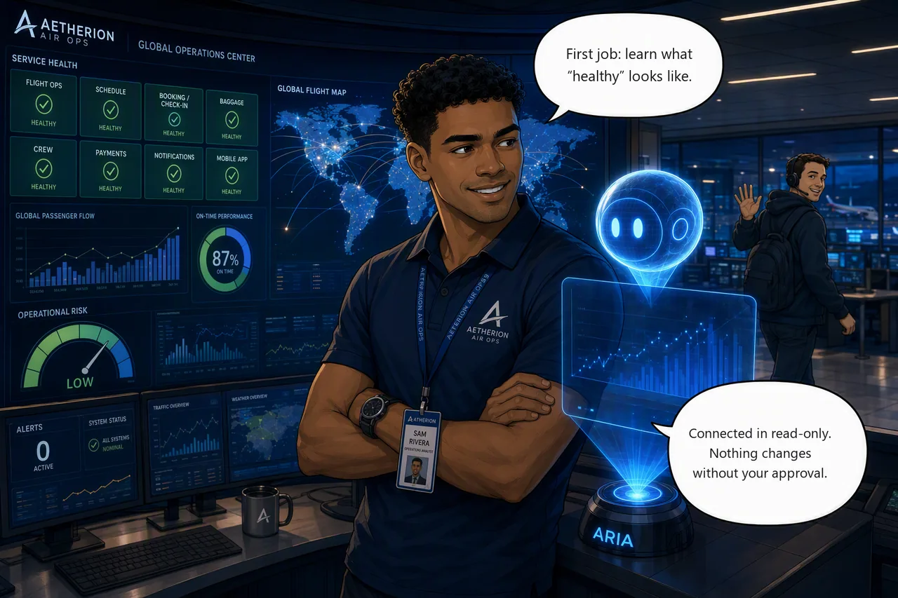

Challenge 1 · Onboard the Agent and Establish the Baseline¶
Challenge 01 of 08 · Act I: Foundation
Run mode: Review · Access: scoped to one resource group
Stage: Foundation → Operations → Engineering → Autonomous → Major Incident
Situation: You've just taken over the Aetherion AirOps Operations Center at the start of your shift, and every service tile is green. Before the SRE Agent can help with real incidents, you need to know what healthy looks like, and connect the agent scoped to a single resource group in Review mode, so it proposes changes and waits for your approval.
Mission: Connect the SRE Agent scoped to your resource group in Review mode, capture a validated operational baseline, and schedule a proactive daily health check.
Why this matters
- Baseline: Healthy-state reference every later incident is measured against
- Faster RCA: Spot anomalies sooner against a known-good benchmark
- Bounded from the start: Scope the agent to one resource group; in Review mode it proposes changes and waits for approval
- Proactive ops: Catch drift before a symptom becomes an outage
Start this challenge
For Challenge 1 the script only prints the scenario. No fault is injected, so the board stays green.
If your Operations Center is not all-green (for example you ran a later challenge on this environment), reset to a clean baseline first:
Baseline on a clean board
A baseline captured while the platform is degraded quietly breaks Challenges 2 and 3, because every later comparison is measured against it. If the board was recently red, reset and let telemetry settle for a few minutes before you capture anything.
Tasks¶
- Check the board. Read the Operations Center once while it's green. That's your reference for the rest of the day.
- Confirm telemetry is flowing. Open Grafana and check that AKS and Application Insights are reporting.
- Connect the agent. Create the SRE Agent in your resource group and give it read access to your code, logs, and Azure resources, in Review mode. Point Code at your own copy of
aetherion-airops-platform— never at the lab repo. - Capture the baseline. Ask the agent for a baseline of the
aetherionnamespace, then spot-check its numbers. Trust the measured latency; verify the configuration. - Put it on a schedule. Have the agent re-run that health check every morning so drift shows up before it turns into an incident.

Suggested Azure SRE Agent prompt¶
Paste into the agent chat
Generate an operational baseline for the aetherion namespace, including:
running services and ready replica counts; dependencies (which services use
PostgreSQL and Redis, and what sits behind the API); normal latency for the
booking service (which serves check-in) and the flight board; and the top
operational signals to watch.
Support every finding with telemetry evidence, and make no changes.
Success criteria¶
- All service tiles are healthy and Grafana shows live metrics.
- The agent is connected to your resource group in Review mode, can list every resource, and asks for approval before any change.
- You hold a validated baseline, captured while the platform was healthy, whose replica counts and latency match the Ops Center and Grafana.
- A scheduled daily health check exists, with a sensible drift threshold.
Verify your work
The check confirms the platform is healthy, then asks you two yes/no questions about the agent connection and your baseline. Answer them honestly, because they aren't graded from the environment:
Hints¶
Hint: orientation & the agent
Load the Operations Center first and let it settle. Create the agent in the same resource group as the platform, keep it at Reader/Review, and ask it an open question about the resource group to confirm scope. A write request should produce an approval prompt, not an action.
Hint: baseline & proactive
Ask one specific question about namespace health rather than browsing pod-by-pod, and cross-check replica counts and latency against the tiles and Grafana. Keep the baseline somewhere you can find it again mid-incident, and schedule the same read-only check so the agent watches for drift on its own.
Stuck? Step-by-step for each task
Give each task a genuine attempt first and skim the hints above. When you want the exact clicks, open the matching task below.
Task 1 · Check the board
- Open the Operations Center (the provisioner prints its URL, and it's already in your browser tabs from setup).
- Confirm every service tile is green. Note the overall state and a couple of latency numbers. This is your healthy reference for the day.
Task 2 · Confirm telemetry is flowing
- Open Grafana (Azure Managed Grafana, linked from your resource group).
- Check the AKS and Application Insights panels are showing live data. If a panel looks empty, give it a minute to collect data points.
Task 3 · Connect the agent
Create the agent. Portal → search Azure SRE Agent → Create. On
Basics set your subscription, your app resource group
(rg-aetherion-microhack-<suffix>), a name (aetherion-sre-agent), and
region. For Application Insights choose Create new: The agent
provisions its own, separate from the app's. For model provider,
Azure OpenAI is a good default (lower cost, EU data boundary). Then
Review + create → Create.
Set up your agent is a separate step. Create alone grants no app access. Choose Full setup and connect:
-
Code → GitHub → sign in → add your copy of
aetherion-airops-platform.Your copy, never the lab repo
The lab repo holds the challenge material: the fault scripts, the answers and the runbooks. Connect the agent to it and it can read how every incident today is caused and cured, which spoils the whole hack. It must only ever see
<your-account>/aetherion-airops-platform. -
Logs → Log Analytics Workspace → pick the app's
aetherion-law. The agent created its own workspace when you deployed it, namedworkspace<random>; that one holds the agent's telemetry, not the application's. - Azure resources → Resource group → select only your app
resource group at the Reader level. Do not pick Subscription
or Management group. You'll also see an
MC_...group that AKS created for the cluster's nodes — leave it out, nothing here needs it.
Two of the five cards are deliberately left for later. Incidents is connected in Challenge 6; connecting it now also creates a quickstart response plan you would have to clean up before the final incident. Knowledge files are loaded in Challenge 4.
Finish setup before you start chatting
When the agent finishes deploying, the portal opens a Team onboarding chat and invites you to start talking to it. You can chat before the context connections are done — it will answer, just with less to work with.
Give it the full picture first, so Challenge 3 can correlate a rollback to a commit and Challenge 4 can read container logs:
- Builder → Code Access lists
github.comas Connected and youraetherion-airops-platformcopy as Ready, with a recent sync time. - Builder → Connectors shows a Log Analytics connector.
If either is missing, reopen the setup wizard from the agent's Overview and finish the connection you skipped.
Keep Review mode so the agent proposes actions and waits for approval. Its identity is granted Monitoring Contributor plus a reader bundle at setup, so the "won't change anything" guarantee comes from Review mode, not from the role being read-only.
Confirm scope. Ask:
List the resources in my resource group and summarize what this application does.
Then ask it to restart a deployment. In Review mode it must ask for approval, not act.
Confirm the connections took. Ask the agent:
Which log sources and code repositories are you connected to right now?
It should name aetherion-law and your repo. If it names neither, the
Code and Logs connections did not save, and Challenges 3 and 4 will
underperform for reasons that look like agent weakness rather than setup.
Task 4 · Capture the baseline
- With the board green, paste the baseline prompt (the Suggested Azure SRE Agent prompt above) into the agent chat.
- When it answers, spot-check 2-3 numbers (replica counts and check-in / booking latency) against the Ops Center tiles and Grafana.
- If the board was recently degraded, reset and let telemetry settle first, or the baseline will record the fault as "normal".
Verify config, trust metrics
Measured values come straight from telemetry and are reliable. Configuration values — CPU requests, limits, replica counts — are the ones that can get attributed to the wrong deployment when the agent is summarising several at once.
That's hard to catch, because the metric beside it is real. "96m against a 100m request" reads as a service about to saturate; if the request is actually 250m, it's fine. Confirm before you act:
Task 5 · Put it on a schedule
You can schedule the baseline two ways, by asking in chat or from the Scheduled tasks page in the portal.
Option A: Ask the agent. Stay in the same chat thread as Task 4 — "this baseline" means the one it just measured, and in a fresh thread it will stop and ask you which numbers you mean:
Schedule this baseline to run every morning at 08:00 UTC and alert me on drift from normal.
It creates the scheduled task, converts that to a cron expression, and sets the drift conditions from the baseline it just measured.
Include the time zone. If you leave it out the agent will not guess: it stops and asks "At which time zone should the daily 08:00 baseline check run?" and waits. Answer it and the task is created normally.
Option B: Configure it in the portal, step by step:
- Open your Azure SRE Agent resource, then select Scheduled tasks in the left sidebar.
- Select Create task in the toolbar.
- Fill in the form:
- Task name: E.g.
Daily baseline health check. - Task details: The instruction the agent runs each time, e.g.
"Check the health of the
aetherionnamespace, compare replica counts and check-in / booking latency against the recorded baseline, and summarize any drift." - Frequency:
Daily(Weekly,Monthly, or aCustom cronare also available). - Time of day: E.g.
8:00 AM.
- Task name: E.g.
- Review the optional fields:
- Response custom agent: Leave empty to use the main agent.
- Message grouping for updates: "Use same thread" keeps each day's results together.
- Agent autonomy level: The default is fine here; because the task only asks the agent to check and summarize, it reports rather than changing anything.
- Select Create task. It appears in the list with status On and a next run time.
- After the first run, select the task name to open its execution history: Each run is a thread showing the plan, the tools used, and the outcome. To change the schedule or wording later, select the task → Edit task → Save (execution history is preserved).
Verify the thresholds it uses. On a clean baseline the booking path is sub-second, so an alert at "p95 > 3 s" would miss real latency.
Reference¶
Up next: The first real symptom
Challenge 2 injects the first incident, so your board will go from green to degraded. You'll know it's abnormal because you measured normal.